Setting up a virtual lab in VirtualBox type 2 hypervisor
Lab Setup
I have downloaded the following software: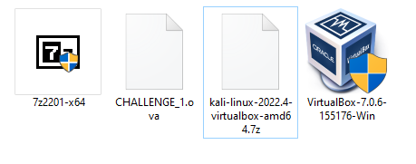
- Oracle VirtualBox 7.0.6 (highest version at the time of writing this) - click here.
- A Kali VirtualBox image directly from the Kali website - click here.
- A Quantum Repository.com challenge VM to attack - click here.
- 7zip to extract the Kali VM - click here.
Software installation
First, install VirtulBox (VBox) accepting the defaults. Note: it is always worth checking through the optional features you are installing for a greater understanding of what you are putting onto your machine.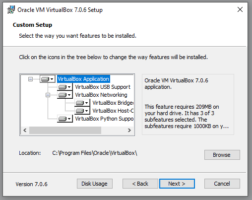
You will be asked 2 questions next, agree to both and press yes. One is configuring the virtual interfaces required by VBox, the other installing dependencies required by the the VBox application.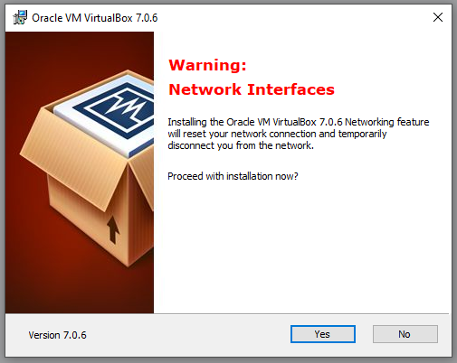
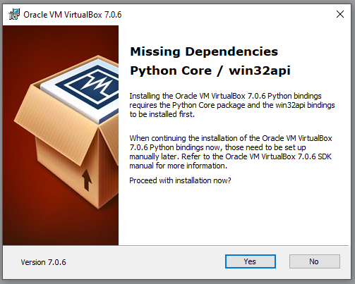
Once installed, load up VBox and you should be greeted with a similar screen: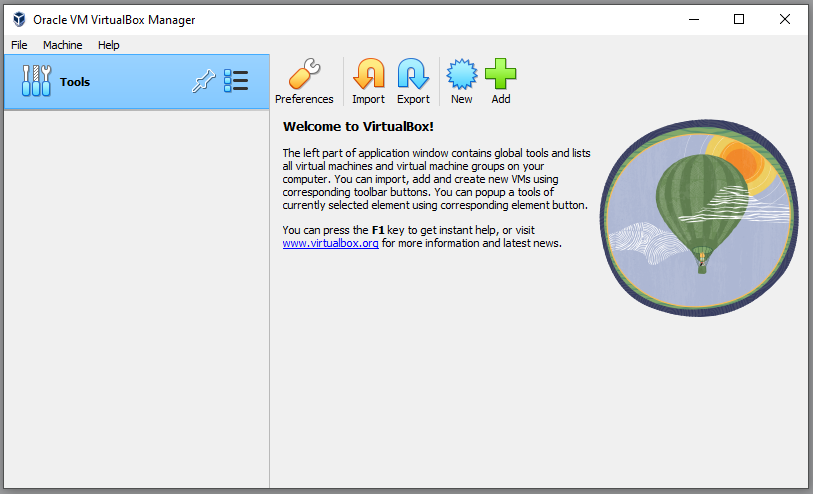
This is your VBox dashboard. From here you will have complete control over your Virtual Machines (VMs). Finally, install the 7zip application we downloaded agreeing to the defaults.Building the lab
At this point we can start adding VMs to our VBox and building out a small virtual lab. First, extract the Kali VBox image we downloaded from the Kali website. This is 7zipped, so we need to extract it first. Right click the Kali 7zip file and select 'Extract here'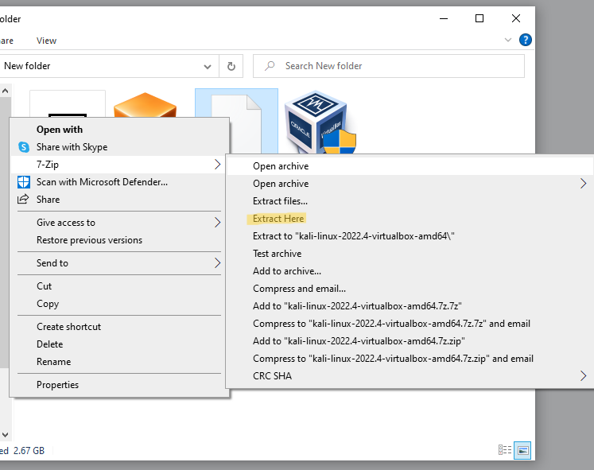
Give 7zip a moment to extract the image: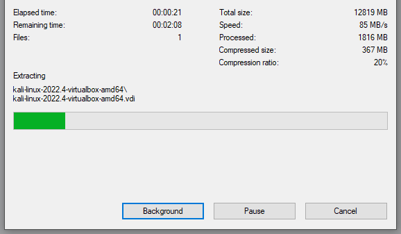
All we have to do at this stage, is open the extracted folder and double click the file with the .vbox extension. This will automatically load the Kali VM into VBox.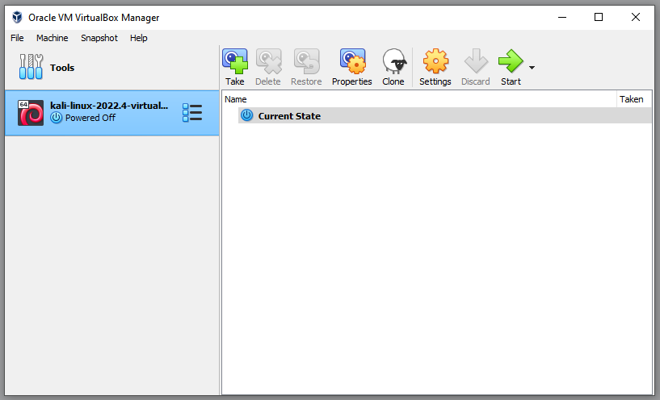
Next, right click the Kali VM in our VM list and select settings: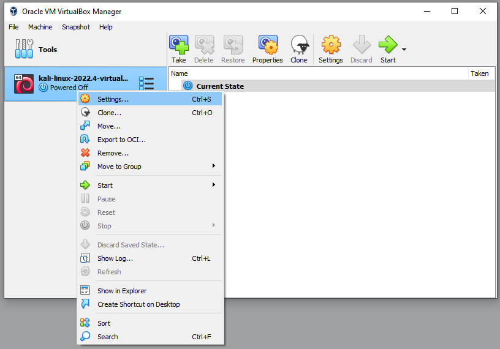
This is one of the key areas when setting up a VM within VBox. Ultimately, this is the VM configuration. You can allocate your VM system resources such as CPU and memory. You can also define what type of network connectivity your VM will have.The current setting Network Address Translation (NAT) indicates VBox will NAT your host machines current connection to the Kali VM. This is important as this can potentially give your VM external internet access depending on how your host machine is setup. In my case, my host machine is connected to my home router and has internet connectivity.
With my VM set to NAT, my VM will also have internet connectivity, albeit through double NAT'ing - once from my home router to my host machine, and then NAT by VBox to my VM. It's always worth updating Kali before you put it into an isolated lab environment like we are going to do.
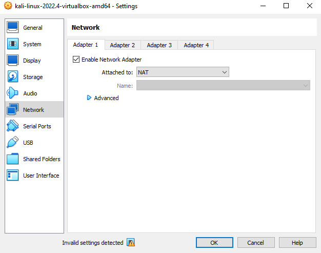
Change your 'Attached to:' to 'Internal Network' and give it a name. In my case, I have called it 'Lab'. This is going to isolate our VM in an internal network called Lab.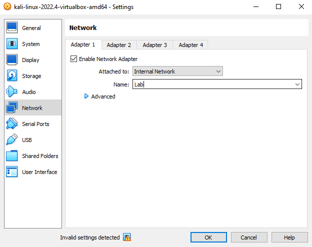
Lets boot up our Kali VM, simply double left click or right click and choose start.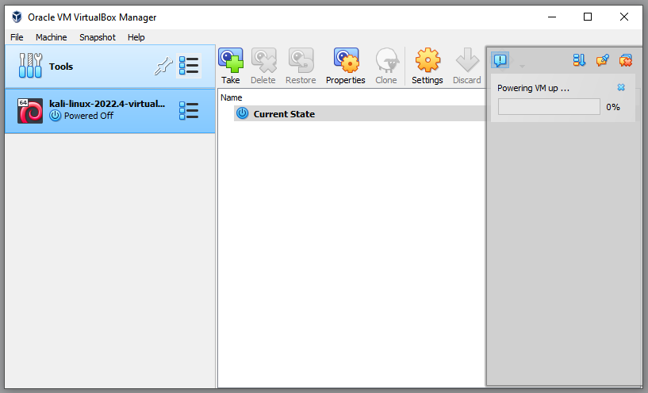
At this point, you may receive an error: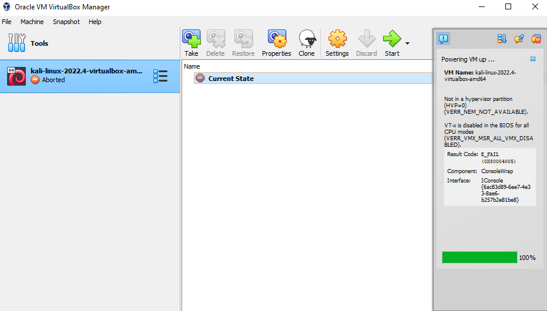
If you receive this error, VBox is telling you that you do not have virtualisation (ring -1) enabled (or a CPU that supports virtualisation). To fix this issue you are required to access the host systes BIOS and enable "Intel(R) Virtualization Technology (Intel VT)". Obviously, this setting is a for a Intel CPU. AMD virtualisation is often called "AMD Virtualization Technology". Unfortunately, I cannot give you direct instructions on how to do this as every make and model of motherboard has a different settings layout these days! All I can recommend is a bit of Googling to find out exactly how to turn this on for your specific motherboard. Alternatively, fire me an email and I will try to help you out. Once your Kali VM is up and running, login with the Kali defaults of username: kali and password: kali.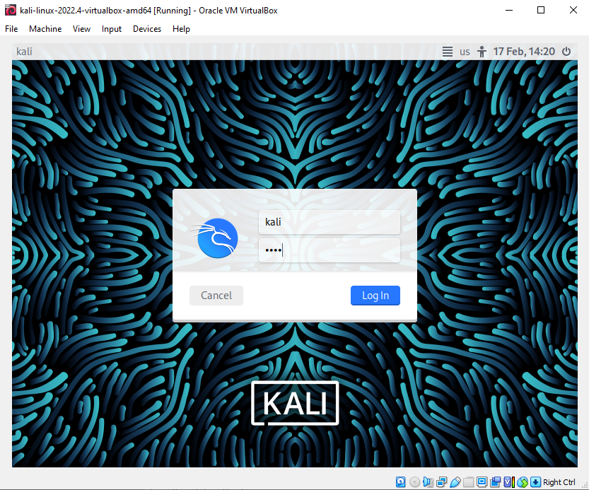
Once logged in, our Kali machine is nearly ready to go. All we need to do is give it an IP address on the subnet we are going to be using, which is 192.168.1.0/24. I have tried to demonstrate the steps below with some poorly annotated arrows!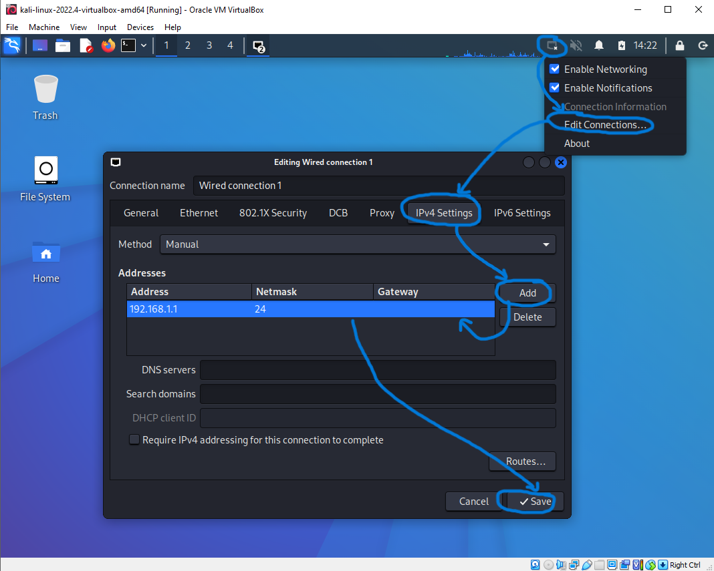
Once the IP information has been saved, we are good to go. Now we just need a target machine to attack. For this I am using a challenge box I have put together, the one we downloaded above. Go to the download, this should be named CHALLENGE_1.ova and simply double click it. VBox will pop-up with an import Virtual Appliance screen. Assign it whatever system resources you would like (it does not need much) and choose a machine base folder. This folder is where the VMs virtual disk will be stored (make sure this location is accessible and you have write permissions to it, otherwise the import will fail).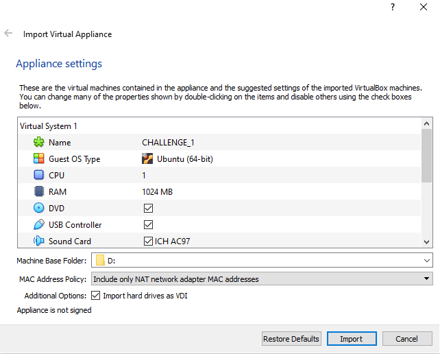
Click import and go through the same steps as we did with the Kali VM and put it onto our internal network called 'Lab' (this might be already set as I exported the machine while it was on this internal network in my VBox).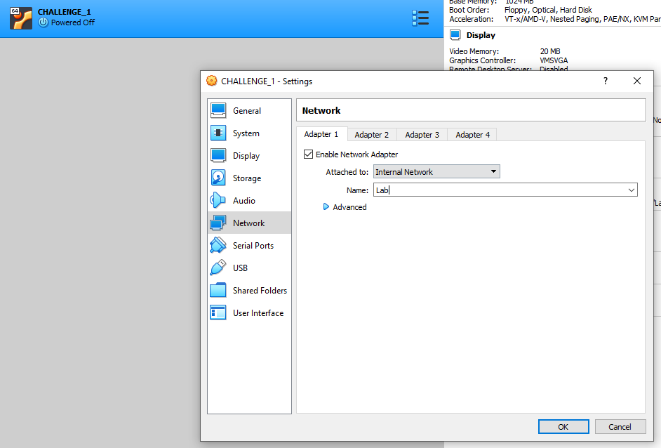
At this stage you are pretty much ready to go and start attacking the challenge box. Don't forget to start it up first! Just double click it within VBox and it should boot. This challenge box, as with all vulnerable boxes I provide are hardcoded on the 192.168.1.0/24 subnet.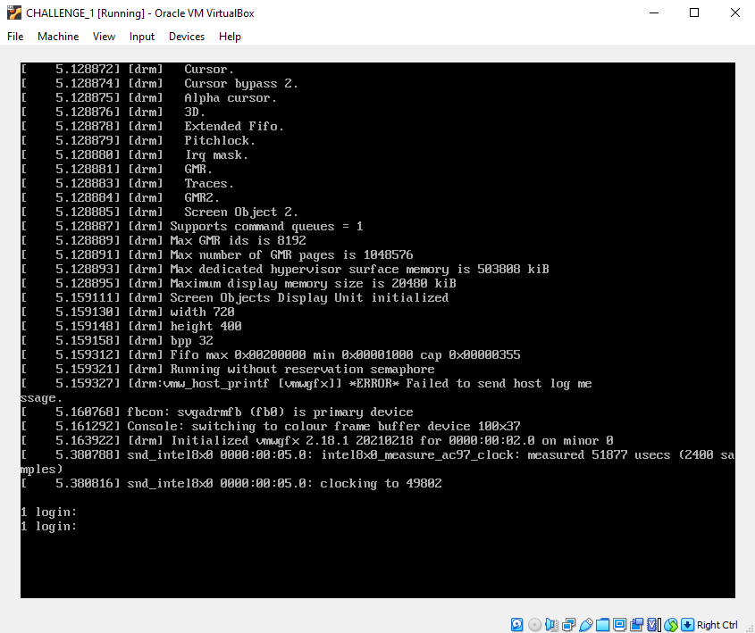
Let us check we have connectivity on our small internal network and conduct host discovery to find our challenge box. Open a terminal and run an arp scan: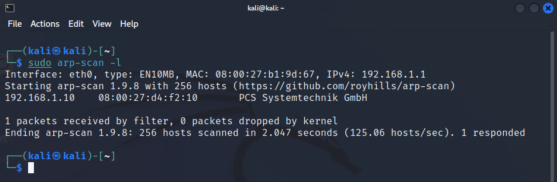
There it is, 192.168.1.10. It's over to you now, break into the challenge VM from your Kali VM and read the flag in /root. Just a small point at this stage. We've very quickly installed VBox and setup a basic lab, however, it is always worth looking through and fully understanding all of the settings if you have time, in particular the possible networking configurations.